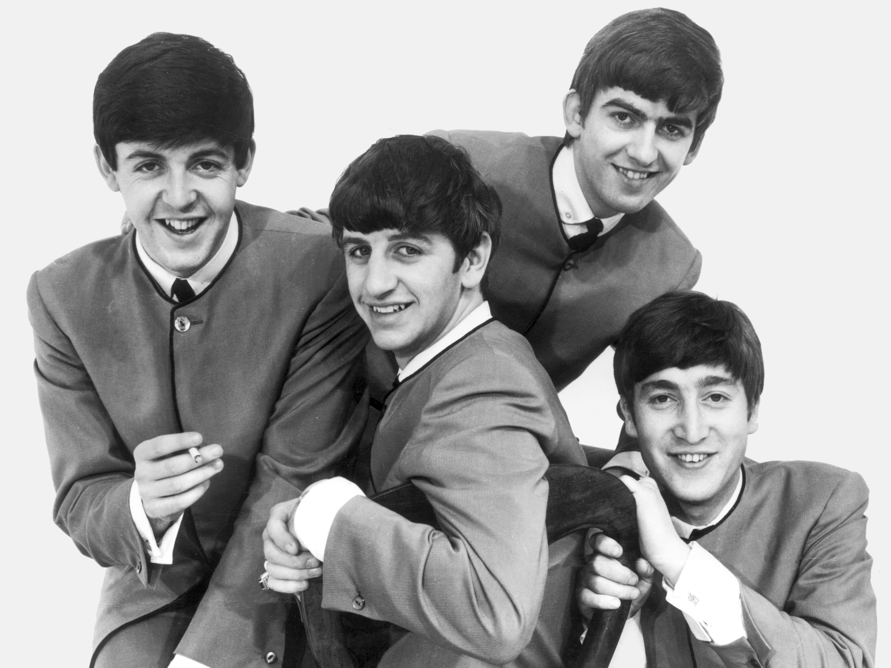
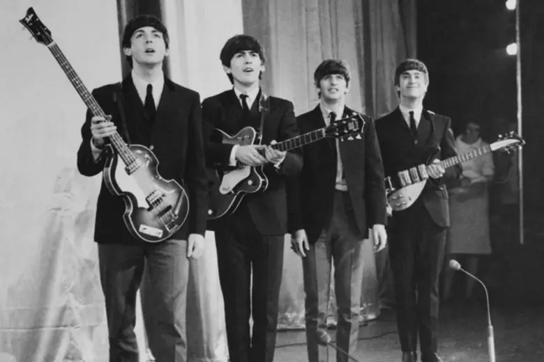
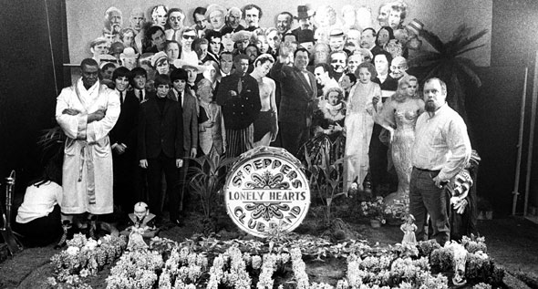
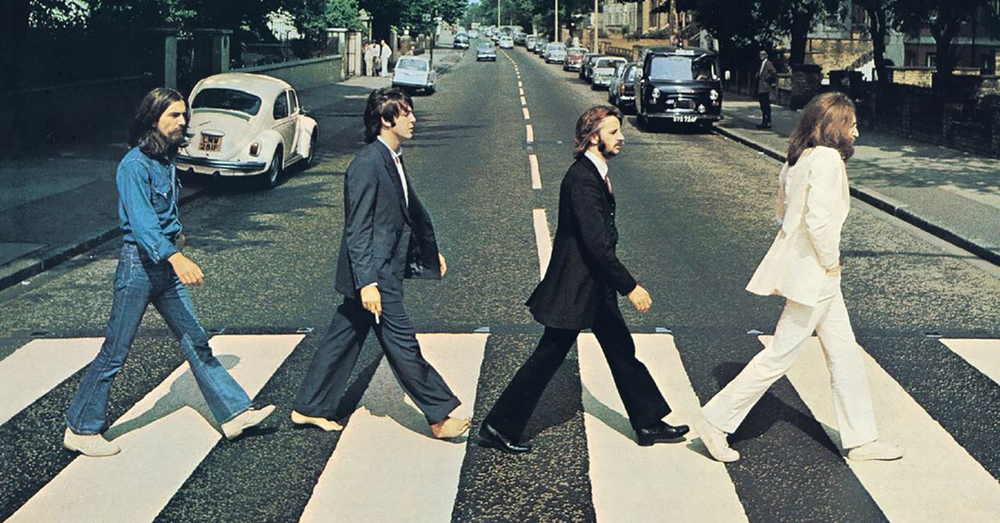

De um porão apertado no Cavern Club às maiores plateias do planeta, a trajetória dos Beatles atravessa quatro personalidades diferentes, uma amizade e uma década inteira de reinvenção musical. Essa é a história de como quatro garotos de Liverpool se tornaram lenda.
Ler biografia →Álbuns de Estúdio
Milhões de Discos
Anos Juntos
Lendas da Música
Em pouco mais de sete anos de carreira de estúdio, os Beatles atravessaram fases completamente distintas: do pop cru dos primeiros singles à experimentação psicodélica. Cada disco é a fotografia de uma banda em constante transformação.
Ver discografia completa →


1960
Durante os anos iniciais tocando exaustivamente em Hamburgo e no Cavern Club em Liverpool, o grupo finalmente se consolida com a entrada de Ringo Starr na bateria. Esse período de intensas apresentações ao vivo foi fundamental para forjar a presença de palco, a química inegável entre os integrantes e a sonoridade crua que serviria de base para a revolução musical que estava por vir.
Explorar 1960 →
1962
O lançamento do primeiro single oficial sob a tutela do produtor George Martin marca o estopim da Beatlemania. A faixa escalou rapidamente as paradas do Reino Unido, chamando a atenção da mídia e criando uma legião de fãs fervorosos. Era o sinal claro de que o mundo estava prestes a ser dominado pelo carisma e pelas composições inovadoras dos quatro rapazes.
Explorar 1962 →
1967
Com o lançamento do aclamado álbum "Sgt. Pepper's Lonely Hearts Club Band", a banda redefine os limites da música pop e da cultura jovem. Exaustos das turnês mundiais caóticas, eles abandonam os palcos e abraçam a experimentação total, transformando o estúdio de gravação em um vasto laboratório sonoro cheio de inovações, arranjos complexos e instrumentos inusitados.
Explorar 1967 →
1969
A icônica travessia na faixa de pedestres em frente aos estúdios da EMI e o lendário concerto surpresa no telhado do prédio da Apple Corps marcam os últimos grandes momentos do grupo. Apesar das fortes tensões internas, eles se unem para entregar obras-primas inesquecíveis que encerram com maestria a década que eles próprios ajudaram a moldar.
Explorar 1969 →John Lennon, Paul McCartney, George Harrison e Ringo Starr. Quatro personalidades opostas que, juntas, criaram uma química impossível de repetir. Conheça a trajetória individual de cada um deles antes, durante e depois dos Beatles.
Conhecer os integrantes →Mais de 600 milhões de discos vendidos e uma influência que atravessou o rock, o pop e praticamente todo gênero musical que veio depois. Décadas após o fim da banda, o impacto dos Beatles continua sendo redescoberto por novas gerações.
Ver o legado →"Realize seu sonho. Você mesmo vai ter de fazer isso... eu não posso acordar você. Você é quem pode se acordar."